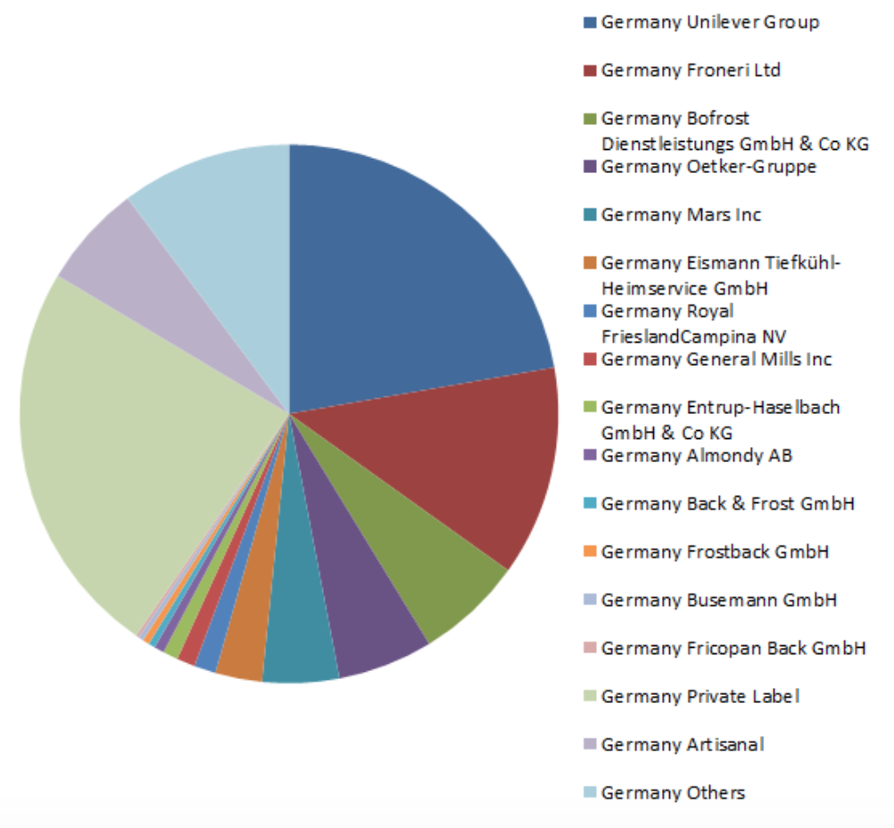

Ice Cream Market Analysis
This is a report made by PNS Solutions with the goal of providing a more efficient view towards the markets of Germany, Poland and Ukraine for new Ice Cream producers and sellers that are looking forward to expanding their business and would like to get details on promising countries. As those 3 have shown great potential, we have made a report to illustrate our data findings. You can go through the whole report or use the navigation bar to get straight to the point you want to check.
Getting started
Here you get general information about these countries. All of them are located in Europe and they are close to each other. Poland and Germany are the members of European Union, what gives them opportunity to trade freely between themselves. The fact of having common border and market makes trade in this area more simple. Costs of transportation might be reduce if countries are used as transit states. For sure, non-obstacles creates lots of opportunities for reducing costs and misspending money. In that situation, that is easy to create supply chain or warehouse network. In case of Ukraine, it is a little bit different and difficult. Ukraine is not a member of European Union, though both of them have signed the Association Agreement and the Deep and Comprehensive Free Trade Area (DCFTA). Ukraine is a priority partner within the Eastern Partnership and the European Neighbourhood Police (ENP). The Eu is seeking an increasingly close relationship with Ukraine, going beyond co-operation, to gradual economic integration and deepening of political co-operation. It gives you an access to new developing market, in which you can rapidly place your niche.
Germany
About the country
Germany is a developed state in western part of Europe, Official name of country is Federal Republic of Germany. It lies between the Baltic and North Seas to the north, and the Alps to the south. It borders Denmark to the north, Poland and the Czech Republic to the east, Austria and Switzerland to the south, France to the southwest, and Luxembourg, Belgium and the Netherlands to the west. Germany includes 16 constituent states, covers an area of 357,386 square kilometres (137,988 sq mi), and has a largely temperate seasonal climate. With 83 million inhabitants, it is the second most populous state of Europe after Russia, the most populous state lying entirely in Europe, as well as the most populous member state of the European Union. Germany is a very decentralized country. Its capital and largest metropolis is Berlin, while Frankfurt serves as its financial capital and has the country's busiest airport. Germany's largest urban area is the Ruhr, with its main centres of Dortmund and Essen. The country's other major cities are Hamburg, Munich, Cologne, Stuttgart, Düsseldorf, Leipzig, Dresden, Bremen, Hannover, and Nuremberg.
Graphs and Data
Germany 2013

Germany 2018
Poland
About the country
Poland is a country located in Central Europe. It is divided into 16 administrative subdivisions, covering an area of 312,696 square kilometres (120,733 sq mi), and has a largely temperate seasonal climate. With a population of approximately 38.5 million people, Poland is the sixth most populous member state of the European Union. Poland's capital and largest metropolis is Warsaw. Other major cities include Kraków, Łódź, Wrocław, Poznań, Gdańsk, and Szczecin. Poland is bordered by the Baltic Sea, Russia's Kaliningrad Oblast and Lithuania to the north, Belarus and Ukraine to the east, Slovakia and Czech Republic, to the south, and Germany to the west.
Graphs and Data
Poland 2013
Poland 2018

Ukraine
About the country
Ukraine, sometimes called the Ukraine, is a country in Eastern Europe. Excluding Crimea, Ukraine has a population of about 42.5 million, making it the 32nd most populous country in the world. Its capital and largest city is Kiev. Ukrainian is the official language and its alphabet is Cyrillic. Ukraine is currently in a territorial dispute with Russia over the Crimean Peninsula, which Russia annexed in 2014. Including Crimea, Ukraine has an area of 603,628 km2(233,062 sq mi), making it the largest country entirely within Europe and the 46th largest country in the world. As was mentioned, there is The Ukraine–European Union Association Agreement, which commits to co-operate and converge economic policy, legislation, and regulation across a broad range of areas, including equal rights for workers, steps towards visa-free movement of people, the exchange of information and staff in the area of justice, the modernisation of Ukraine's energy infrastructure, and access to the European Investment Bank.
Graphs and Data
Ukraine 2013
Ukraine 2018

Expenditures in Euros per household on ice cream
As we see from graph, Germany has the highest expenditure per household on ice cream, also Germany and Poland has stable growth of it. Although, situation into Ukraine is not so good as in others. Market is unstable,we can see from table some fluctuation from 2012 till 2016. When looking at the expenditure exclusively we get the impression, that Germany is the most attractive country for a market entry, since people are willing to spend nearly three times more on ice cream than the other countries observed. We got a question why did Ukraine get these fluctuation in ice-cream market.What we found out is there was war between Ukraine and Russia, some of factories were localized in/by war area and they must have shut down the businesses because of threat or just occupation. As we are going to show later, in Ukraine was high inflation in the period, and it also has an influence.

Yearly tendency of change in market size
Our team decided to take into consideration only tendency of market changing, except for the market size. It is obvious that higher economic development of country has a bigger market size. Researched the markets we found out that nowadays considered countries have rising of their domestic markets. But not always it was like that. For instance, in Ukraine was declining of ice-cream market from 2013 till 2015 which equals 39%. It is explained by territorial conflict which led to shutting down of some factories. Now situation in Ukraine is not so good and there appears some reducing of growth, nevertheless it is a growth. Due to Passport there should be higher growth which will equal 7% what is awesome for Ukraine. In Germany we have as always stable growth which equals 1-2% what is good. It shows that market is stable and established. There will not appear unpredicted changes or “huge” competitors because they are already there and take the niche. Amazing tendency we observe in Poland. It has had rapid growth since 2016. Among overseen states higher growth was only in Ukraine in 2013 which equaled 36%. Polish market it is a marked which develops constantly. According to Passport database, Poland will stay wider in following years. Within two following years growth will be 14% what is an awesome number for developed state.

Inflation rate
The topic of Inflation rate. We are sure that Inflation rate is the one of the most important thing when you are making market research. It shows threats and possible bonuses of market. From found information, we would like to point out that in the markets were totally different situations. In Germany has been typical for developed state situation. It has had slow growing inflation which not suppose to bring some disasters or unpleasant situation Situation in Poland has been a little bit different. It had even deflation in 2015,2016, but now the monetary market has been showing stable inflation from 2017 and there is prediction to be so. The most complex situation in Ukraine. It has a high inflation after 2013, but has good tendency of inflation reducing. In 2018 the rate of whole price changing was 11% what is harmful for Ukrainian economy, but useful for foreign investors. Even though, before crisis, in 2013 was deflation on level of 0,3%. High inflation makes Ukrainian market more attractive for FDI (Foreign Direct Investment).

Ice-cream production by Germany and Poland
(lack of data for Ukraine) Below you could see a table of statistic data of ice-cream production in millions of liter for Germany (blue line) and Poland (orange line). Unfortunately, we did not find such information for Ukraine. It is not a secret that Germany is the second biggest producer of the good among European Union members and concurrently the biggest exporter in the world. Although it has had unsatisfied tendency since 2014 but now Deutschland has slow aresing and in accordance with Bizvibe it will have had growth in scale of 11% by 2021. In case of Poland, everything looks different. Poland had got fast and high growth of production by 2016. In 2017 it began to decline and return to usual market condition which had been before 2015. It means good opportunity to take easily a place on market and stay on there.

Avoiding of consumption of dairy products
Our team checked out how many people avoided consumption of dairy goods in Europe. Unfortunately, we were able to collect data only for 3 years, but we got it for different generation groups. We would like to point out that middle generation group which is in age from 45-59 years old had bad tendency (we highlighted it on graph through crossing line) for sellers. There is a unsatisfied tendency for sellers at all. During these 3 years, number of people who decided to give up consuming of dairy products ( which are partly ice-cream) increased 1.3%, from 10,7% in 2015 to 12% in 2017. Of course, it is not describing exact situation in pointed countries, but it helps to figure out what happens on whole european market. You may ask us why we did such type of research. Because it may helps to aim upon specific group of people for making marketing things or to flee a group which are not interested in the item.

Final considerations
We certainly hope that this analysis has helped you to get a better and clear knowledge regarding the Ice Cream business markets of Germany, Poland and Ukraine.
Please bear in mind that this data and interpretation can be used for the following purposes:
- Academic purposes
- New business' plans
- Business growth and analysis
This data cannot be sold or distributed independently. Please use it wisely within the requirements.